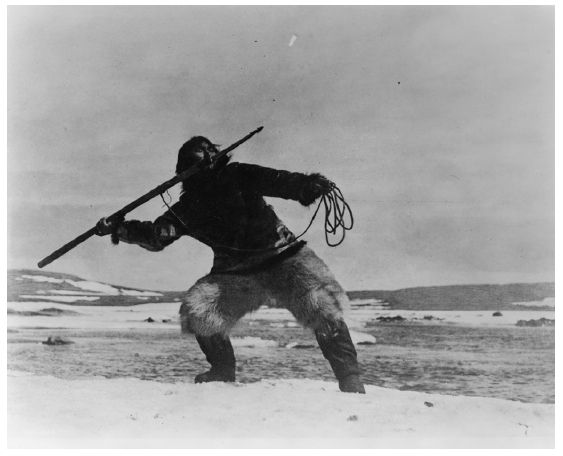
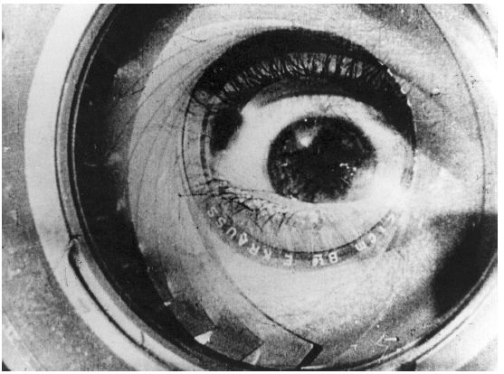

20世纪20年代，有三位重要人物开始了他们的纪录片制作生涯，这三位人物也奠定了此后全世界观众心目中纪录片的形态。他们是罗伯特·弗莱厄蒂、约翰·格里尔森和济加·韦尔托夫。这三位人物既声称自己表现真实，又声称自己是艺术家。而我们已经看到，“真实”和“艺术”这两个论断，正是有关纪录片的最基本矛盾。
艺术什么情况下会与现实冲突，什么情况下又有利于再现现实？这三位制作人以不同的方式探讨了这一问题，也为后来人的观点奠定了基础。
格里尔森和弗莱厄蒂两人尽管志向不同，但都开启了纪录片的现实主义 传统。这一传统以栩栩如生的方式给观众制造了看到现实的幻觉。因此，现实主义不是努力去以真实的方式捕捉现实，而是努力地用艺术去模仿现实，模仿得越好，观众就越会深陷其中而不去多想。一些技巧可以用来制造现实的幻觉，包括（1）省略剪辑（这种剪辑方式不会被观众意识到，你的眼睛被骗过了，认为它只是跟随着影片中的动作）、（2）摄影技术（让你觉得几乎身临其境，或者是以“过肩视角”看着动作的进行，给你一种处在影片动作中的心理感受）和（3）节奏（按照观众对自然世界中事物节奏的期待，安排影片的节奏）。现实主义由于其召唤力，成为全球商业电影的共同语言，不管是纪录片还是故事片。
还有一些方法和现实主义相反，它们让人注意到艺术家和技术在电影制作方面的角色。其中的一些方法被归到形式主义 这一派别之下。所谓形式主义，就是突出电影本身的形式元素。这样的元素包括明显的、可觉察出来的剪辑，反常的色调、镜头的变形、动画等特效，以及声音或画面的减慢或快进等。在电影诞生早期，很多制作人曾经实验过这些技巧，而且他们代表了此后一种强大的、独立于商业领域的纪录片表达方式。（广告商也觉得这样的技巧很有用，因为它们能制造令人印象深刻的强烈效果。）形式主义的支持者攻击现实主义者，说他们制造幻觉，愚弄观众，让观众觉得自己在看真实的东西；相反地，形式主义的制作人认为，应该让观众觉察到甚至称赞影片中艺术家对于作品的创造。
罗伯特·弗莱厄蒂
美国人罗伯特·弗莱厄蒂一生致力于纪录片事业，虽然作品为数不多，但其中一些已经成为纪录片的标杆。他的第一部影片《北方的纳努克》大获成功，也给全世界的纪录片制作人——从苏联的谢尔盖·爱森斯坦、英国的约翰·格里尔森到法国的让·鲁什——带来了灵感。
弗莱厄蒂成长于美加边境，他父亲是一位矿主，他有部分时间和他父亲一起生活在采矿营地。他曾和北极原住民一起生活，而后者也待他很好；他为此制作了一部影片记录自己的北极旅行，但这部影片由于底片烧坏而中途夭折；之后他带着从一家法国皮货贸易公司筹集来的资金，回到了那群原住民中间。根据这段经历制成的纪录片，虽然遭到一些经销商的拒绝，却为影片本身和弗莱厄蒂带来了滚滚财源。影院放映《北方的纳努克》时着力推销它的噱头，比如狗拉雪橇，以及用纸箱板做成爱斯基摩人的房屋，影片被当做“真正北极土地上的生活与爱的故事”来兜售。
这部影片借鉴了当时流行的电影娱乐手法。它和流行的旅行宝典影片一样拥有“景观”元素，本身就是一次旅行风光展。弗莱厄蒂曾看过D.W.格里菲斯的故事片《一个国家的诞生》（1915），他的《北方的纳努克》采取和该片类似的结构，讲述了人们和“景观”斗争以求生存的传奇故事。影片亦有创新之处：弗莱厄蒂将他的观众带入了一种文化的日常生活，而他和他的观众都认为这种文化很原始。影片的新意就在于没有将“原始人”作为怪物或奇异生物来展示（此前不久，在1893年的芝加哥哥伦布纪念博览会上，他们还是被如此对待的），而是将他们视为有家庭、有社会的人类。城市民众可以透过纪录片制作人的视角，审视另一种生活方式——的确如此，他们甚至认为自己在审视历史。弗莱厄蒂镜头下再现的因纽特人的生活方式，是刻意为之的古朴。
《北方的纳努克》温暖的人文主义情怀是一种成功的商业手段，相比之下，另一位“民族志抢救者”，摄影师爱德华·S.柯蒂斯就远没有那么成功了。弗莱厄蒂夫妇在完成《北方的纳努克》之前曾拜访过柯蒂斯。因为曾经拍摄美国印第安人穿着古朴服饰的照片，柯蒂斯当时已经十分有名。他和夸扣特尔印第安人一起生活了数年，希望通过把这一经历拍成电影，吸引观众买票观看以收回成本。他在《猎头族之地》（1914）——后来更名为更确切的《战舟之地》——中呈现了一些仪式。柯蒂斯要求夸扣特尔人用情节剧的形式将他们文化中根本没有的这些仪式表现出来。该片票房惨淡，美学价值也很低，虽然后来的人类学家对影片中表现的那些仪式大感兴趣。
很显然，弗莱厄蒂为了吸引更多观众买票观影，作了一些选择。他将主角“阿拉卡瑞拉”改名为“纳努克”，并在他周围营造了一个很有镜头感、实际上却不存在的小家庭。他还隐藏了不少因纽特人也参与了影片制作这一事实。他没有记录平淡无奇的尤其是女性的日常生活，而是拍摄甚至导演了极富戏剧性的捕猎场面。弗莱厄蒂的拍摄技巧（缜密的视觉处理和许多次补拍后的产物）和影片编辑高明的节奏运用（很慢，足以让观众相信他们是在观看真实但又极具戏剧性的生活），通过生动的原材料制造了高品质的娱乐效果。现实主义模式的选取——通过影片剪辑、镜头角度和节奏控制，制造看到并体验到现实的幻觉——给予观众一种生动的印象，让他们觉得他们真实地体验到了一些原汁原味的东西。
弗莱厄蒂在影片中的尚古风格是一种道德选择。“我想展现的，”他说，“是这些人曾有的庄严与品格——趁着现在还有可能；而将来白人不仅会摧毁他们的品格，还要摧毁这一人种。”弗莱厄蒂对于原住民文化有着强大的浪漫主义信念，而且认为与之相比，自己的文化在精神上显得十分贫瘠。“纳努克的问题是怎样与自然相处，”弗莱厄蒂的遗孀记得他曾经说过，“我们的问题是如何与我们的机器相处。纳努克解决问题的法宝是他的精神，《摩拉湾》中的波利尼西亚人也一样。但是我们却为自己制造了一个环境，让我们的精神很难与之和平共处。”
这样的浪漫主义信念，也意味着弗莱厄蒂认为因纽特人的文化因为与外界的接触而受到了污染；他不相信因纽特人的文化可以经得住外来的冲击。在他心目中，真正的原住民文化是纯粹的，完全不受机器文明的影响，虽然那位因纽特人“纳努克”不仅帮他修摄像机，还在市场上出售兽皮。

图3 浪漫派现实主义者罗伯特·弗莱厄蒂让因纽特人在《北方的纳努克》中重演传统风俗。罗伯特·弗莱厄蒂导演，1922年
这样的浪漫主义成为弗莱厄蒂作品的印记。他制作了为数众多的影片，其中包括在萨摩亚拍摄的《摩拉湾》（1926）、在爱尔兰附近的荒岛亚兰岛拍摄的《亚兰岛人》（1934），以及在路易斯安那州的沼泽地拍摄的最后一部作品《路易斯安那州的故事》（1948）。所有这些影片都抹去了社会关系的复杂性，突出了人与自然的对立。在南太平洋拍摄的时候，弗莱厄蒂困惑地发现自然对岛民十分仁慈，所以他就利用痛苦的文身风俗来制造戏剧冲突，而当时这一风俗已经日趋消亡。他忽视了很多事情，比如萨摩亚殖民势力的存在、改变了萨摩亚社会结构的财产的急剧私有化，以及政府极力推行的西方的合法婚姻（却与萨摩亚人自己的婚姻习俗相违背）。在《亚兰岛人》（1934）中，弗莱厄蒂让亚兰岛岛民复原捕杀姥鲨的画面（必须要教他们如何表演），却隐去了和他们的生活休戚相关的两个部分：
他们和大陆居民进行鱼类贸易，以及岛民被迫来到这片贫瘠的土地种植海藻，不是因为严酷的自然的力量，而是由于外居地主的存在。
《北方的纳努克》的魅力之一在于弗莱厄蒂所宣扬的“高贵的野蛮人”，这一流行的概念在西方思想中很有历史，可以追溯到启蒙运动早期，让——雅克·卢梭的作品对此也有所表达。“高贵的野蛮人”的概念表达了一种乐观主义，即自然状态下人的天性是好的。伴随维多利亚时代欧洲殖民主义的高潮和美国人的“昭昭天命” [9] 论，“高贵的野蛮人”这一概念在此时欧洲大陆人和英美人的想象中变得尤为生动。即便当新兴国家开始对不同的文化实施政治统治时，这些国家的探险者仍然追寻未被涉足、人类未知的异国土地，歌颂简单生活的美好。正如利奥·马克思指出的，这种认定异质文化因所谓的简单纯真而倍加珍贵的浪漫主义情怀，随着工业化的急剧发展，只会有增无减。
人们一直喜欢弗莱厄蒂影片的另外一个原因，是他们能明显感受到他对影片中人物的强烈热爱。他每次都与和他一起生活、工作数月的人建立起一种温暖的人际联系。在弗莱厄蒂拍摄《亚兰岛人》的40年后，制作人乔治·斯托尼——他本人就是由于观看弗莱厄蒂的影片受到启发，从而走上影片制作道路的——来到亚兰岛，他的祖父曾是该岛上的第一位医生。斯托尼在那里采访了当时参与电影拍摄的人员，并拍摄了纪录片《神话是如何创造的》（1978），片中认为《亚兰岛人》是一个源于现实的、以艺术创造的神话。40年后，亚兰岛上的人们仍然满怀深情地记起弗莱厄蒂。同样，一代又一代的因纽特人也愉快地看着《北方的纳努克》，认为这是一份礼物，可以让他们了解自己的传统。
当时的影评者对弗莱厄蒂影片的意图和伦理提出了质疑，《亚兰岛人》是质疑的焦点。格里尔森和英国纪录片的另一名先驱保罗·罗萨称赞弗莱厄蒂是一个伟大的艺术家，将纪录片从简单的记录提升为一种优美的艺术。在这两位纪录片制作人看来，弗莱厄蒂缺少与工业时代相适应的社会责任感与投入感，而他们倡导的纪录片运动正注重表现这一时代。大萧条时期，弗莱厄蒂的作品激怒了中间偏左立场的批评家们。“人与自然的斗争是不完整的，除非它包括了人与人之间的斗争，”英国左翼批评家伊沃尔·蒙塔古写道，“和好莱坞一样，弗莱厄蒂正忙着把现实变成传奇。悲剧的地方在于，作为一名有着诗意双眼的诗人，他的谎言比好莱坞的更大，因为他能让传奇看起来像是真的。”
弗莱厄蒂去世后，持不同观点的评论者分为了两个阵营，用人类学家杰伊·鲁比的话来说，是“弗莱厄蒂神话派”和“弗莱厄蒂浪漫骗子派”。弗莱厄蒂的遗孀弗朗西丝曾对他的所有电影作出了不可或缺的贡献，在他死后守卫着他的传承。她提出“弗莱厄蒂法”这一名称，并称赞这一方法，称它是一种“以素材为中心”的特殊才能，弗莱厄蒂以这样的方式与观众分享他“纯洁的双眼”。她还创造了“非先入为主”一词来描述弗莱厄蒂的方法——她认为其典型特征是直觉、神秘、准确。海伦·范东恩是弗莱厄蒂最后两部片子的编辑，她从脚本中提炼出了影片的故事轮廓；她不赞成弗朗西丝·弗莱厄蒂的神秘说，但却称赞弗莱厄蒂是一位“有眼光的诗人”，一位“天才”，一位艺术家，其成就却因为商业的需求而悲哀地受到了阻碍。
反殖民意识的增强、冷战时代第三世界国家民族主义文化精英的崛起，以及自反式的人类学的发展，都为“弗莱厄蒂浪漫骗子”说推波助澜。一些人提出，弗莱厄蒂的“人类对抗自然”主题加深了人们对原住民无益的臆测；似乎只有在原住民与我们保持一段安全距离时，他们才会唤起我们的滥情，给我们以精神上的放松。人类与自然冲突的主题更促使人们将原住民看做孩子甚或宠物般的无辜群体，看做现代文明面前的潜在受害者。这让人们不太相信原住民政治上的努力——他们和更大经济体之间存在着往来，并且要求分得利益。不过，杰伊·鲁比还是提醒人类学家们，在审视自己的行为之前，不要太过严厉地批判弗莱厄蒂。
罗伯特·弗莱厄蒂留下的遗产经久不衰。纪录片《哭泣的骆驼》（2003）讲述了大漠戈壁中的一个家庭拯救被母骆驼抛弃的骆驼幼崽的故事；影片中上演了一场热闹的仪式，歌者对着母骆驼唱歌，感动了它。这个故事是由纪录片制作人编写和创作的，其中有一个制作人是蒙古人。制作人在影片中再现的生活状态是他们自己的想象中百十年前的戈壁生活，当地人兴高采烈地帮忙当起了演员，影片中的小家庭也是虚构出来的。当有人问起影片副导演路易吉·法洛尼影片的灵感来源时，他承认：“好吧，你会笑我，但灵感是来自《北方的纳努克》。”
约翰·格里尔森
约翰·格里尔森的事业在纪录片史上引起的分歧和争议，比起弗莱厄蒂的只多不少。格里尔森出生在苏格兰，父亲是一位保守的、笃信加尔文教的教师。格里尔森将拍电影作为一个强大的工具，试图解决他一生中面临的问题：如何处理一个民主的工业化社会中的社会矛盾。他曾在第一次世界大战中服役，见证过残酷的劳资矛盾，在贫民窟学校当过教师，还做过牧师，后来获得了美国洛克菲勒奖学金。在美国，他受到著名学者沃尔特·李普曼的影响。李普曼认为日趋复杂的社会要求专业人士能够将事务翻译给大众，否则大众就会感到无所适从，因为理解任何一个特定的事件都需要一定程度的专业知识。对于刚刚兴起、诞生于19世纪末劳资冲突背景下的公关业，格里尔森也很感兴趣。最终，他发现了弗莱厄蒂的《北方的纳努克》，认为在用电影力量将观众带入另一重现实方面，这部影片是一个出色的例子，他对弗莱厄蒂个人的永恒魅力感到折服。在撰文评论《摩拉湾》时，他赞扬了其“纪录片”的特质，为这一类型的影片确定了名字。
回到英国之后，格里尔森成功地说服了英国官员相信纪录片的力量。此时正是游说纪录片的良好时机。1927年，另一位苏格兰人约翰·里思成为了世界第一家公共广播公司——英国广播公司的总经理，该广播公司以教育公众、提高公众素质为宗旨。此时大萧条又让英国的阶级关系更加紧张，许多人认可社会主义，甚至共产主义。同一时期，大量的社会改革也在如火如荼地进行，比如在美国，“新经济政策”就触发了不少社会改革。各行各业的艺术家，特别是摄影家和纪录片制作人之类以现实为创作对象的艺术家，都认为艺术和政治及社会改革密不可分。
“帝国推广委员会”雇用格里尔森来推广英帝国。他的上司毫不含糊地表明了观点：“对于国家来说，官方纪录片的作用就是让新的公众认可现存的秩序。”格里尔森完成了亲自导演的唯一一部影片《漂流者》（1928）——一部关于捕鲱鱼的纪录片，是为了回应一位官员对于该产业的兴趣而精心策划的；之后，他雇用了一些年轻男性，还有为数不多的几位女性，为政府和大公司拍摄纪录片，其中有他的妹妹鲁比。纪录片《工业化英国》（1932）是一次尝试，想让英国人走出对过去简单生活的怀旧情结。不过，格里尔森却犯了个错误：他让弗莱厄蒂来导演这部片子。弗莱厄蒂不仅超额使用了影片预算，而且所拍摄的脚本着重展示了手工业技艺，这实际上会激发人们的怀旧情绪，最终格里尔森解雇了弗莱厄蒂。由埃德加·安斯蒂和鲁比·格里尔森导演的《住房问题》（1935）是由一家汽油公司和一家房地产机构赞助的，影片让贫民窟的居民诉说自己的悲惨处境，并对拆除贫民窟的计划表示支持。《夜邮》（1936）由巴兹尔·赖特和哈里·瓦特导演，诗人W.H.奥登和作曲家本杰明·布雷登也为该片贡献了力量。该片讲述了一封信从被投入邮箱到完成递送的故事，大部分场景是在一辆邮政列车（列车内部为人工布景）上拍摄的。影片让观众看到了完成政府服务所需的精妙复杂的机构和产业，并对此产生敬畏。影片不仅为邮局增添了光环，也展示了现代社会不同产业之间环环相扣的特征。
格里尔森和他的“小伙子们”在讲座和文章中，热烈宣扬一种理念，即纪录片是教育和促进社会凝聚的工具。1932年，格里尔森曾称赞纪录片具有观察“生活本身”的力量，因为纪录片展示了帮助人们理解这个世界的真实的人，并展示了真实的故事。他以此来和好莱坞的“歌舞片套路”和“通俗化倾向”对比。他称赞弗莱厄蒂让现实讲述整个故事的能力，不过谈起弗莱厄蒂的浪漫主义时，他希望“弗莱厄蒂作品里暗藏的新卢梭主义，会随着这个独具个性的人的死亡一起消失”。他认为纪录片真正的挑战在于将创造性用于“让混乱的现状变得大体上井然有序”，作品传达的信息要“诚实而透明，引起深刻共鸣，最大限度地激发公民的责任感”。为了达成这一目的，就要摆脱个人化的制作而走向程序化，这一点很重要。
图4 约翰·格里尔森将纪录片视作一种工具，可以用来提升社会凝聚力和洞察力。《夜邮》歌颂了英国邮政业体现出的人与机器的合一运作。哈里·瓦特和巴兹尔·赖特导演，1936年
之后，格里尔森更加坚持纪录片的社会功能，甚至认为可以以牺牲“美好”为代价。他曾于1942年断言：“纪录片从本质上就不是电影”而是“一个教育公众的新方法”。他将国家看作掌管社会民主的公平中立的机构；他相信企业可以运用公共关系为公众造福，只要它们尊重真相。他曾支持在影片中运用一些纳粹宣传家们采用的宣传手段，且并不为此感到不安。他说：“极权主义可以用在恶行上，也可以用在好事上。”格里尔森主张将纪录片和娱乐电影严格区分开来。他相信纪录片既不能战胜好莱坞式的电影，也不可与之合流，因此他主张纪录片应该走非商业化的路线，并且力争带给观众完全不同的体验。
各种企业和政府都来找格里尔森当顾问他们都在寻找最新的公关工具。格里尔森的影响非常广泛。第二次世界大战时期他在加拿大生活了很长时间，期间他组建了加拿大国家电影局（NFB），这一机构至今仍然存在。他为美国和英国政府都担任过顾问。他的同事出力建立了澳大利亚国家电影局。他还为南非政府的领导人出谋划策；不幸的是，基安·托马塞利的文章中提到，他被一个支持种族隔离的南非白人群体欺骗，推荐了他们以民族团结的名义成立国家电影局的计划书。格里尔森作为纪录片领军人物的地位，以及英国社会纪录片运动本身，都在第二次世界大战后急速滑坡。但是，他认为纪录片是一项社会教育工程的远见，深刻地影响了后来的纪录片制作人。
对格里尔森作品的同时代影评，主要集中在效果这一问题上。这些纪录片是不是太激进了？影片中的主角主要是工人阶层，在阶级观念强烈的英国社会中，许多人会为之瞠目。这些影片会不会足够受欢迎？它们在审美上是不是足够大胆？作为回应，保罗·罗萨在他的《纪录片》一书中提出，英国社会纪录片运动是“这个国家对整个电影界最重要的贡献”，这句话蕴藏的意义得到了世界的认可。格里尔森成为英国和加拿大传媒史上一个备受尊崇的，甚至是带有神秘色彩的人物，这部分也是格里尔森派自己大力宣传的结果。
后来的学者们则热衷于挑战并推翻这一神话，伊恩·艾特肯和杰克·埃利斯都对此作出过很好的总结。学术界还将格里尔森置于他所处的时代和地域，认为他是公共关系的早期拥护者，一些人攻击罗萨对格里尔森的评论，认为罗萨忽略了同时期其他电影的努力，有自吹自擂之嫌 [10] 。还有人批判格里尔森的作品对于现实主义复杂内涵的处理过于简单，并指出其作品赞扬男性中心主义和中产阶级文化。
虽然格里尔森时而以左翼人士的面貌出现，别人也常指责他为左翼分子，但后来的评论家还是注意到了他的保守主义倾向和对维持现状的渴望。乔伊斯·纳尔逊仔细研究了格里尔森在加拿大期间的作品，认为格里尔森在作品中淡化了加拿大的民族主义，目的是为了维护英联邦的团结；他还认为格里尔森利用纪录片分离主义策略，支持好莱坞占领加拿大电影院。
英国学者、前广播记者布赖恩·温斯顿也许是格里尔森最尖锐的批评者，他指出格里尔森的作品污染了整个纪录片领域，通过宣称追求艺术——对真实的“创造性对待”——这一借口，回避讲述真相的责任。但是他的作品又缺乏艺术方面的高度，通过宣称为更崇高的社会目的服务而回避了追求艺术的责任。这些作品还宣称只想做一个简单的真相讲述者，从而也回避了为社会服务的责任，即宣传功能。最后，格里尔森还忽略了一个事实，即他的影片的观众很少，甚至比不上商业影片中的小制作。他的影片不走影院路线，人们观影也是迫于接受教育，而不是出于对纪录片这一电影形式的欣赏。格里尔森的纪录片不够诚实，影片中强化了赞助方要表达的利益，扼杀了创造性。温斯顿指出，纪录片制作人应该自由地讲述他们认为重要的故事，不用装腔作势地打出为社会服务的口号，或者故弄玄虚地鼓吹自己可以以特殊的方式接近真相。
伊丽莎白·苏塞克斯采访过不少格里尔森派的英国纪录片支持者，她认为格里尔森关于纪录片形式的观点——让观众意识到他们所处的社会环境——经久不衰，并传承给了下一代的电影人，他们秉承这种精神，以不同的方式制作着纪录片。曾经鼓吹格里尔森改变世界的罗萨后来说过的话很耐人寻味：“我认为这些电影本身并没有什么重要的，重要的是它们留下的精神。”
格里尔森发起并大力倡导的这场电影运动，在纪录片制作史上留下了深刻的印记，这也是后世的批评会如此热烈的原因。格里尔森派电影人的理论文章，对于想做出一番事业的纪录片制作人来说，成为了可参照的重要文本。格里尔森创立或受到他的启发而创立的一些机构，特别是加拿大国家电影局，一直以来也对纪录片制作人起着重要的作用。纪录片从根本上说是一项带有社会目的的工程，而纪录片制作人是社会进步的推动者这一观点，一直很有说服力。纪录片由政府和企业支持，采取非商业、非院线的播映方式，这一商业模式也已经被广为接受。如果说弗莱厄蒂使得对现实的呈现体现出美学价值，那么格里尔森则让纪录片对现实的呈现凸显出社会功能。
济加·韦尔托夫
纪录片的第三个奠基人是苏联的革命题材纪录片制作人济加·韦尔托夫（原名丹尼斯·阿尔卡季耶维奇·考夫曼）。韦尔托夫既是纪录片制作人，也是苏联所谓“不表演的”（没有导演成分的）电影的支持者。他支持“抓拍生活”，即拍摄没有经过排练的电影瞬间，这些瞬间具有独特的反映真相的价值。他相信纪录片是革命的最理想媒体，不仅应该将纪录片发扬光大，而且应该对故事片打压遏制，因为其功能有害。俄国革命之后，韦尔托夫成了苏联政权的眼中钉，他的作品也在该国被遗忘。但是，在俄国革命之后的十年，韦尔托夫对苏联和全世界的电影都有重大的影响。虽然在苏联时期韦尔托夫在他自己祖国电影史上的痕迹被抹去，但他仍继续为世界各地的先锋派艺术家和纪录片人提供着不竭的灵感。
韦尔托夫积极倡导纪录片中的艺术和科学——对他而言这是电影这一媒介的本质。他的梦想是让电影业重视“‘不表演的’影片而非经过导演的影片，以场面记录来代替场面调度，冲出剧院的舞台，回归生活本身”。他将摄像机看作是“我的机器化身……这机器展示了只有我能看到的世界的本来面貌”。摄像机的控制力，补充了人类微不足道的视物能力；它能从极高的地方眺望全景，也能透过二楼的窗户看到里面，还可以看到遥远的远方。韦尔托夫也和其他很多人一样，认为马克思主义是一种关于社会的新科学。他认为在电影编辑中，摄像机的奇妙技能应该和革命的马克思主义分析结合起来，成为革命的科学工具，也就是他所说的“以共产主义的方式解码”电影素材。这样，机器的力量就和意识形态的力量结合起来了。
韦尔托夫认为，电影是苏联正在孕育的共产主义社会的理想媒体，因为它抓住了现实生活的真相，没有向观众说谎，也没有分散观众的注意力，同时因为它代表了神奇的、机器驱动下的现代主义精神，而共产主义正是这种精神最先进的部分。他贬损自己称之为“艺术”片的电影，认为那代表着虚构的娱乐。韦尔托夫也是一个先锋派的艺术家，这是他一直不变的身份。
作为一个生活在反犹社会中的犹太人，大学时期年轻的丹尼斯·考夫曼给自己起了个古怪的名字：济加·韦尔托夫（意思是旋转的陀螺）。韦尔托夫来到彼得格勒（即圣彼得堡）这个欧风盛行的城市，在为数不多的接纳犹太人的一所学校学医。在这里他汲取了现代主义艺术文化的营养，也受到了赞扬新生事物、现代事物和机器的未来主义这一先锋运动的影响。在那里他也爱上了美国诗人沃尔特·惠特曼的作品。
革命给了他一个机会，他得以在“宣传列车” [11] 上工作，将革命宣传送到斗争的前线。他在列车上制作新闻短片，编辑了几十辑（每辑10到20分钟长）的《电影真理报》（1925）。这个名字和党报《真理报》相呼应，也意味着对纪录片力量的宣扬。这些新闻短片将观众带入新成立的苏联的遥远腹地，向他们展现政治审判的新闻，给他们展示沙皇时代的坦克如何被重新用于公共设施，以及体育活动、突发事故和人们钟爱的题材——电气化。这些短片赞颂城市、现代化和机器的奇迹。它们在全国电影院的故事片前面播放，也在各种俱乐部、工作场所和乡村的大屏幕上播放。在那些从来没看过电影的农民脸上，韦尔托夫看到了惊叹和敬畏。
韦尔托夫在制作新闻短片的过程中，兴奋地看到了这一媒体越来越多的潜能；他成了不表演的电影或纪录片的热烈宣传者。他和他的影片编辑伊丽莎白·斯维洛娃，也就是他后来的妻子，还有他的弟弟米哈伊尔·考夫曼成立了一个“三人委员会”。三人委员会召集了一批热心人士，他们称自己是电影之眼。他们发表了一些激烈的观点和声明，如《我们：不一样的宣言》，邀请观众远离“爱情故事的甜蜜拥抱/心理分析小说的毒药/偷情剧的诱惑/音乐的干扰”，进入“开阔的、四维的空间（三维空间加上时间）/寻找我们自己的素材，我们自己的节奏和韵律”。
虽然韦尔托夫一口断定摄像机之眼带来了科学奇迹，并拥有在人类空间之外讲述真理的能力，但是和格里尔森和弗莱厄蒂一样，他也提出人类的故事讲述者至关重要：“仅仅在银幕上展示真理的碎片、真理的局部是行不通的。这些局部应当按主题组织起来，整合成一个整体的真理。”和弗莱厄蒂提出的艺术家“纯洁的双眼”以及格里尔森的“对真实的创造性对待”一样，韦尔托夫主张影片编辑有权将无序的现实生活重组为共产主义的真理，这实际上是允许纪录片制作人想做什么就做什么。他们三个人激烈宣扬自己作品的真实性，但同时又将演绎真理的人塑造成一个需要创作自由的艺术家。
韦尔托夫想要讲述的，是共产主义社会的美好，以及建设这一社会所需要的斗争和牺牲的重要性及崇高性。不管是在政治上还是在艺术上，他都比同时代的许多人更加激进。受托洛茨基的影响，他鼓吹经济的完全国有化和公有化。他的第一部纪录片《电影眼睛》（1924）向观众宣告它是“第一次的探寻/抓拍的生活/第一部非人为设计的电影对象/没有/剧本/没有/演员或影棚”。它用经过复杂编辑的、令人眼花缭乱的一连串图像，向苏联经济中仍然存在的资本主义因素和腐败现象发难。他随后又在很短的时间内接连制作了三部续集，每一部都推进了剪辑方面的实验，即用并列 [12] 的展示方式追求现况电影 [13] 的效果。
韦尔托夫的作品故意采取非传统和挑战性的手段，让评论家感到既着迷又不解，让他的朋友感到不悦，也在纪录片制作人中掀起了激烈争论。他树敌很多，并且丢掉了他在莫斯科的工作。他的代表作《持摄像机的人》将争论推到了顶点。这部他和他的妻子以及他的摄影师弟弟米哈伊尔一起制作的纪录片，是电影艺术史上最震撼也最富有争议的影片之一。该片意在呈现一个发生了巨变的国家的壮阔全景，这个国家的普通人的日常生活无意间成为了一首壮丽的现代主义诗歌的一部分。如果说惠特曼曾听到美国人的歌唱 [14] ，那么韦尔托夫则是听到了苏联人的歌唱。
《持摄像机的人》是一部城市交响曲纪录片，采用了“生活中的一天”的形式，采取了电影套层结构。观众和影片里的观众一起入席，影片里的观众离席时，电影也结束了。电影中，摄影师如同精灵一般，用镜头的魔法，带领观众走入私人生活的场景（一个孩子出生、一对夫妇离婚），穿过广袤的土地，来到工厂和体育馆。摄影师和影片编辑开起了视觉玩笑——用一些特效快乐地展示这种新技术的奇迹，它能够通过再现现实揭示意义。
最后，影片赞扬了制作人的力量与快乐，如同它讴歌新生的苏联的伟大成就一样。这样的纪录片制作，符合韦尔托夫备受争议的电影理念，即纪录片要具有超越的力量，不仅记录社会，而且要大胆想象和观察人类认为不可能发生的事情。影片的开场白就宣告了制作者的野心：“这部实验性的作品，是为了创造一种真正的、国际化的纯银幕语言，一种与剧场和文学语言完全不同的语言。”
这部影片让全世界的艺术家和影评人为之折服和雀跃，部分是由于其中含混的元素愉快地激起了他们的好奇心，当然，影片也强化了艺术家的自信。但苏联的观众对此片的感觉却完全相反，当时他们正越来越多地选择观看地方电影和世界流行电影中的娱乐喜剧和情节剧，他们抱怨不知道影片在说什么。在当时环境日益严酷的苏联，艺术和政治方面的实验都遭到打压，这部影片更是毁掉了韦尔托夫本就岌岌可危的前程。韦尔托夫后来又对声音这一形式元素进行了一次令人振奋的实验，即影片《热情》或称《顿巴斯交响曲》（1931），之后，他发现已经很难在政府控制的电影业中生存了。他一丝不苟、坚持不懈的实验主义精神已经不为苏联政府所容，庸俗易懂的电影成了政府的新宠。后来的岁月里他被安排去编辑歌颂斯大林的无聊新闻短片和纪录片。
虽然韦尔托夫的作品曾在苏联的艺术界和政界引发强烈反响，但苏联观众看到的却很少。《电影眼睛》（1924）只公映过一次。《前进吧，苏维埃！》（1926）只在三家电影院短暂上映过，没有相关宣传。《在世界六分之一的土地上》（1926）没有在影院首轮放映。《第十一年》（1928）只对几千名乌克兰观众播放过，而《持摄像机的人》虽然在全国公映，但一般的观众对其并不欣赏。电影先锋谢尔盖·爱森斯坦是韦尔托夫最早的推崇者之一，却也对韦尔托夫的风格——用他的话说是“动机不明的摄像机恶作剧”——越来越恼火。（韦尔托夫曾强硬回击，称爱森斯坦应当尊重现实的力量，而不是在讲故事时伪造现实。）
图5 苏联革命艺术家济加·韦尔托夫在《持摄像机的人》里进行了震撼的电影形式实验。济加·韦尔托夫导演，1929年

图5 苏联革命艺术家济加·韦尔托夫在《持摄像机的人》里进行了震撼的电影形式实验。济加·韦尔托夫导演，1929年
韦尔托夫的声誉在苏联遭到扼杀，却部分由于西方艺术家的热情而得到了维持。对于赫伯特·马歇尔等作家来说他也是一个重要人物，马歇尔在梳理韦尔托夫的职业生涯时，曾将他列为苏联几位“创造性遭到扼杀的人物”之一。他的声誉也被学者们所挽回，其中的关键人物有电影史学者杰伊·列达，他曾亲眼见证早年的俄国电影；还有电影学者安妮特·米切尔森，她以英文出版和分析了韦尔托夫的作品。
韦尔托夫对电影形式的挑战以及他的电影实验，激励了后来数代的先锋派影片制作人：他想象出了一种影片形式，可以跳出解说模式和自然主义模式的故事讲述方法。对韦尔托夫和那些想用艺术来粉碎人们对现状的期待的制作人来说，罗伯特·弗莱厄蒂选择的那种现实主义，即含蓄或明白地讲述一个为生存而斗争的故事，让他们深恶痛绝。韦尔托夫和爱森斯坦的电影对格里尔森产生了重要影响，他们关于电影可以服务于社会变革的观点对格里尔森很有吸引力。20世纪60年代的一些纪录片制作人打破了纪录片中的一些习惯性的导演手法，他们将韦尔托夫视作一个文化英雄。马丁·斯科塞斯在一家碟片商店中无意间发现了《持摄像机的人》，他声称该片让他看到了种种可能性，令他震惊不已。韦尔托夫那不太连贯的、不确定的、兴致高昂的、自信满满的实验，将继续让观众惊叹，也将继续给纪录片制作人带来灵感。
这三位奠基人为纪录片制作人，也为观众确立了对于纪录片的三种不同的期待：高尚化的娱乐（弗莱厄蒂）、有益于社会的故事讲述（格里尔森）、富于挑战性的实验（韦尔托夫）。他们的名字成为这些方法的代名词，他们自己也成为后来纪录片人的偶像。